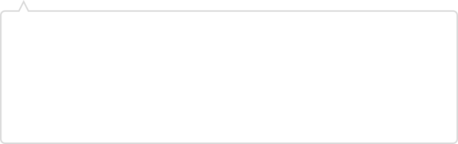

第三者による従業員と退職者の面談代行
「スピークマインド」
「スピークマインド」
第三者による従業員と退職者の面談代行で組織改善
従業員の本音や退職理由の把握が難しいと感じている企業様に対して、第三者による従業員面談および、退職面談の代行サービスを提供いたします。
当サービスによって本音を話しやすい環境を作り、従業員の悩みや退職理由を丁寧に聞き出します。
収集した情報を改善レポートとして提案させていただくことで、具体的な対策を把握し、社員の定着率を向上や退職を未然に防ぐことが可能です。
当サービスによって本音を話しやすい環境を作り、従業員の悩みや退職理由を丁寧に聞き出します。
収集した情報を改善レポートとして提案させていただくことで、具体的な対策を把握し、社員の定着率を向上や退職を未然に防ぐことが可能です。

スピークマインドでできること

第三者面談で本音を引き出します
専門の相談員がプライバシーを徹底的に守りながら丁寧に話を伺うため、従業員や退職者は安心して本音を話すことができます。
また、当サービスは土日祝日を含め、24時間どこでも対応可能。オフラインとオンラインの環境にも対応できるため従業員や退職者が話しやすい環境を提供することができます。
面談レポートから組織改善ができる
従業員の本音から考えるので「やってみたけど効果がなかった！」がないクリティカルな対策が打てます。
課題や不満の構造を見える化し、何をすべきか明確になります。
課題の対策方法と取り組むべき順序まで丁寧にレポートにおまとめします。
人事社員や管理職の面談工数の削減
面談は、肉体的・精神的な疲労をもたらします。
特に、多くの面談を行うと、負の感情を引き受け、精神的な負担が増えることもあります。
そこで、当サービスを利用することで、面談担当者の負担を軽減し、
ポジティブな関係性構築のための施策や採用活動に多くの時間を確保できるようになります。
スピークマインドならではの特徴
オンラインで24時間どこでも
相談者が多忙で他の社員に相談する時間がなくても、弊社はオンラインMTGツール(LINE WORKSやTeamsなど)と連携しているため、土日祝、24時間どこでも相談することができます。
人事や管理職の方々が勤務時間中に相談を受けることのできない時間や場所でも柔軟に対応することができます。
最初の3回は無料 他社より低価格で提供
他社製品と比べて低価格でサービスを提供させていただきます。
最初の3回のインタビューは試用期間として無料で提供させていただき気に入らなければそのまま解約することもできるので気軽にお試し導入することもできます。
信頼関係と再雇用
専門の相談員が退職理由を聞くことで、企業が退職者の意見や改善に真剣に取り組んでいるというメッセージになります。
これにより、退職後も信頼関係を維持することができます。面談レポートで組織改善がしやすくなり、課題を解決することで退職者が戻ってきやすくなります。
退職代行の対策
退職代行を使用されて退職されてしまうと退職者の本音が「退職するための企業が納得する理由」しか聞くことができません。
しかし弊社は通知のタイミングなどを工夫して、退職者も納得できるような退職代行を使わせない仕組みを提供することができます。
退職者からの声
・土日に相談可能なのは非常に良いと思う
・共有したくない人を指定できるのは非常に良い上司に知られるのは別に良いが、相談していることを周りに知られなくてとても助かる
・オフレコが良い。感情的な批判はお互いのためにならないので、こういった機能で精神的な負担を減らせるのはありがたい
・新卒で入った会社だったので退職した後は少し後悔した。このサービスが当時あったら退職後も関係を続けられたのではと思う。

・第三者面談というのはすごい良い
・会社に勤めると強みを見せないといけないことが多く弱みをみせれないので良い
・オフレコ機能がすごい良い。相談したことに対するお咎めが怖いので
・絶対に知られたくない人には知らせない状況と知っていたら、第三者に本音を話すので良い
・新卒1年目は人間関係で苦労したので、このサービスで相談して部署移動などができるとありがたい
・人事の人に直接言うには勇気がいるということも第三者の人が返してくれるのは相談する人に寄り添っているサービスで良い
・新卒からこのサービスが通知されていたら相談機能から使うと思う
導入までの流れ
お問い合わせ情報の入力
お問い合わせ画面から、必要な情報をご入力の上、お申込みください。 弊社にて内容を確認後、ご入力いただいたメールアドレスにご連絡いたします。
お客様にサービス説明
対面またはオンライン会議でサービスの説明をさせていただきます。必要であればお見積書などを作成させていただきます。

NDA、契約書の締結
ヒアリング結果から、秘密保持契約、契約書を要望に沿った形で作成し、締結させていただきます。

無料の試用サービスを提供
退職者面談は、最初の3回まで無料でご利用いただけるオプションがありますので、
まずは試用サービスとしてご提案させていただきます。
試用サービス終了後に、サービスのご利用を終了することも可能ですので、ご安心ください。
よくある質問

自社で行う従業員面談や退職面談との違いは？
第三者が面談を行うことで、会社に言いずらい本音を従業員や退職者が話すことができます。
従業員面談でも退職を決意した従業員は会社の課題を伝えないことが多く、
通常の退職面談も退職者の目的が企業に退職を納得してもらい速やかに退職することであるため、
会社の課題を直接伝えないことが多いです。しかし、専門の相談員が従業員や退職者に本音を話しやすい環境を提供することで本音を聞き出すことができます。
また、しっかりと本音を話してもらうことで退職者との信頼関係が生まれ、再雇用にも繋がります。
オンラインMTGツールにより、土日祝や24時間どこでも相談可能であるため、人事社員が勤務時間中に相談を受けることのできない時間や場所でも対応することができます。
従業員や退職者の本音は聴ける？
第三者がプライバシーを保ちながら面談を行うことで、本音を話しやすい環境を提供することができます。
また動機や課題を整理することで従業員や退職者が気づいていなかった重要な企業の課題や本音を聞くことができます。
解決できない不満ばかりでは？
すべての課題を解決する必要はありません。重要なのは課題を抽出して重要な課題に優先順位をつけて対策することです。
退職者の不満がすべてが正しく解決すべきものではありません。
退職者が増え、組織の維持が困難になってくると、すべての課題に対応することが難しくなるのは当然です。
そのため、課題に対して冷静に対処する必要があります。
第三者による退職者レポートを活用することで、客観的かつ冷静に対応できるようになります。
既にレポートや質問の雛形がある場合はこれを使用できますか？
すでにレポートの雛形や質問フローがある場合は柔軟に合わせることができます。
ご要望のあるカスタマイズは柔軟に対応できますので、MTGの際に詳しくお伝え下さい。
面談を任せると従業員や退職者との関係維持ができないのでは？
従業員の相談の場合、退職してしまう前に課題を抽出することができるので対策をすることができるようになり、相談した従業員から会社への信頼も高くなります。
退職の場合は、第三者が不満を聞くことで会社として退職者の意見と改善に投資をしており退職者も重要だと伝えるメッセージになります。
退職面談後に人事や経営層の方々がレポートを受け取り、事実を確認して、
今まで退職面談に使っていた時間の代わりに簡単なお見送り面談を行うことで関係性を維持することができ、再雇用などに繋がることにもなります。